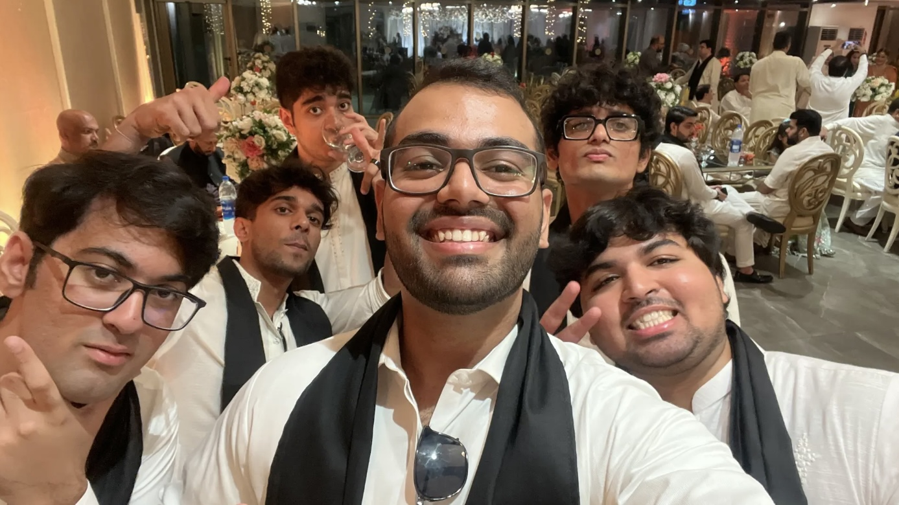
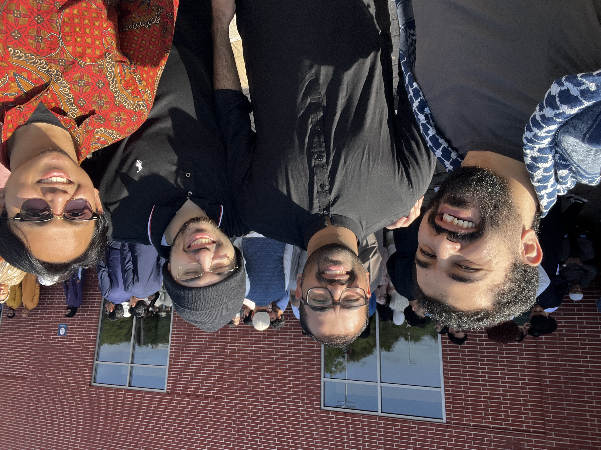
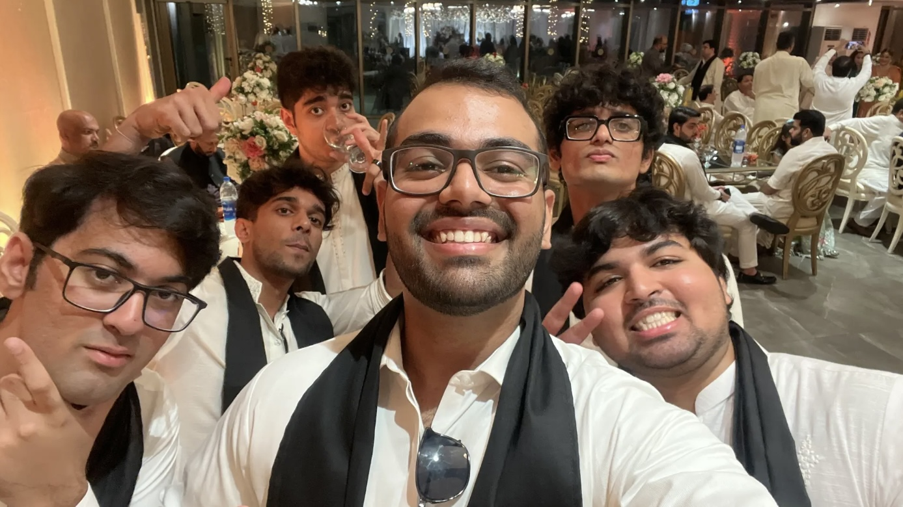
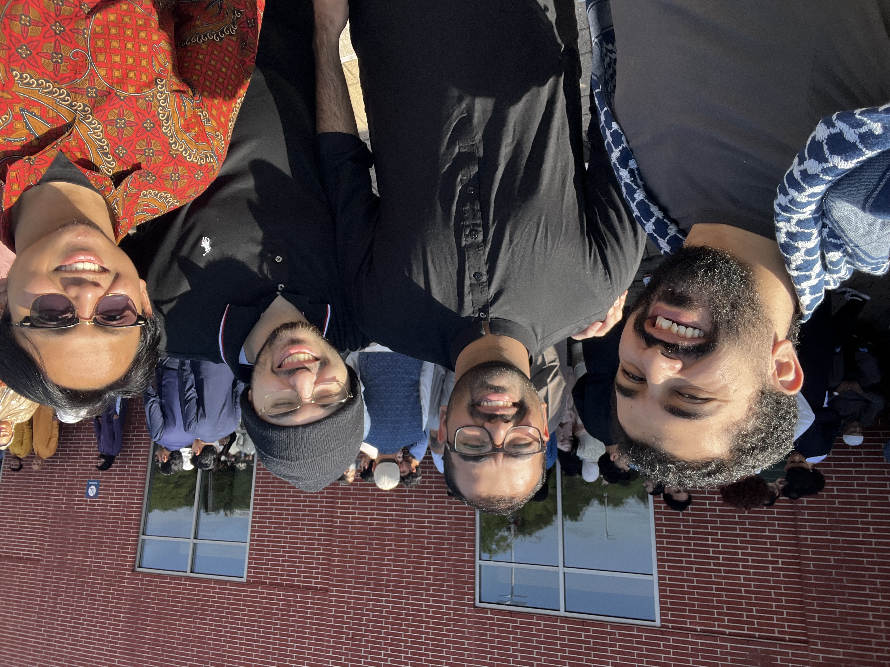

About Me
My name is Saad Salman Beg, and I've journeyed a remarkable path from Karachi, Pakistan, where I completed my high school at the Karachi Grammar School, to the bustling academic environment of the University of Houston. Here, I am diligently pursuing a degree in Computer Science, maintaining a 3.4 GPA. This journey hasn't just been about academics; it's been a profound exploration of my capabilities and interests. I thrive on challenges and have a passion for sports, which has been a significant part of my life, providing me with not just physical fitness but also a sense of camaraderie and teamwork.
What truly sets me apart are my skills that I've honed over the years. I am a quick learner, able to grasp new concepts and skills with ease and efficiency. My time management skills are exemplary, allowing me to balance my rigorous academic schedule with sports and other extracurricular activities. Leadership and management come naturally to me; I have the ability to inspire and guide others towards achieving collective goals. Problem-solving is another strength of mine, helping me tackle complex challenges, both in academics and in life. Moreover, my communication skills are top-notch, enabling me to articulate ideas clearly and collaborate effectively. Lastly, my adaptability ensures that I am always ready to embrace change and thrive in diverse environments.
As an officer in the Pakistan Student Association at the University of Houston, I am deeply involved in promoting Pakistani culture on campus. This organization, established in 1965, plays a crucial role in showcasing Pakistan's rich heritage and traditions. My role allows me to use my leadership and communication skills to foster understanding and celebrate diversity within the university community, enhancing the multicultural fabric of our campus.
.JPG) 



High School
I attended Karachi Grammar School (KGS) from 2004, embarking on an educational journey that significantly shaped my life. Situated in Karachi, Pakistan, KGS is renowned for its commitment to academic excellence and a holistic approach to education. It was at KGS that I completed both my O levels and A levels, achieving notable results with 1 A*, 3 A's, and 6 B's in O levels, and 2 B's and 1 C in A levels.
Beyond academics, I actively engaged in extracurricular activities at KGS. I proudly represented the school in soccer and served as a prefect in my final year, contributing to the school community's positive atmosphere. Additionally, I had the privilege of being the captain of the school rowing team, where I developed strong leadership and teamwork skills.
My time at Karachi Grammar School was transformative, providing me with a solid academic foundation and instilling in me the values of teamwork, leadership, and discipline that continue to guide me in my journey.
College
My academic journey continued at the University of Houston, where I embarked on a path to earn my Bachelor's degree in Computer Science. Since enrolling, I have delved into a diverse range of subjects, including discrete mathematics, calculus 2, programming, data structures, and computer science fundamentals. These courses have not only expanded my knowledge but also honed my problem-solving skills and equipped me with the technical expertise necessary for a successful career in the field of computer science.
Currently, I maintain a commendable 3.4 GPA, a testament to my dedication to academic excellence and my commitment to excelling in my chosen field. The University of Houston has provided me with a stimulating and supportive academic environment where I can thrive and continually improve my skills and knowledge.
Looking ahead, I am set to graduate in 2026 with a Bachelor's degree in Computer Science from the University of Houston. This educational institution has played a pivotal role in shaping my academic and personal growth, and I am eager to apply the knowledge and skills I've acquired here to make a meaningful contribution to the ever-evolving world of technology and computer science.
My journey at the University of Houston extends beyond academics; it has also been a profound learning experience in terms of life skills. Living independently while pursuing my degree has taught me invaluable lessons in time management, adaptability, and self-sufficiency. Balancing coursework, extracurricular activities, and daily responsibilities has honed my time management skills, enabling me to make the most of each day.
Moreover, the experience of living alone has fostered adaptability and problem-solving abilities as I navigate the challenges of daily life, from grocery shopping and cooking to managing finances and maintaining a living space. These practical life skills have not only made me self-sufficient but also more confident in my ability to tackle real-world challenges.

Extracurricular Activities
My extracurricular journey has been a diverse and enriching one, reflecting my commitment to personal growth and community engagement. In high school, I had the honor of serving as the captain of the rowing team, a role that demanded leadership, teamwork, and dedication. It was an experience that not only allowed me to excel in a physically demanding sport but also instilled in me the values of discipline and perseverance.
Beyond the shores of high school, I extended my passion for community service by collaborating with renowned organizations in Pakistan, including "The Citizens Foundation" and "Dar-Ul-Sukoon." Through these associations, I actively participated in multiple community initiatives, contributing to causes that promote education and provide support to those in need. These experiences deepened my understanding of social responsibility and instilled in me a profound sense of empathy.
My commitment to fostering new horizons led me to become the founder of rowing at the college level in Karachi, Pakistan. This initiative not only showcased my leadership skills but also allowed me to introduce the sport I loved to a broader audience, promoting teamwork and physical fitness.
Currently, as a member of the Pakistan Student Association, I have the privilege of sharing the rich tapestry of Pakistani culture with both the campus and off-campus communities. This involvement not only celebrates diversity but also allows me to bridge cultural gaps and foster a sense of inclusivity among people from all backgrounds.
My extracurricular activities have not only shaped me as an individual but have also allowed me to make a positive impact on the communities I've been a part of. They have reinforced my belief in the power of leadership, empathy, and cultural exchange as drivers of personal and societal growth.

Work Experience
In my previous role at GYRO HUT in Houston that lasted from January 2023 to March 2024, I had taken on the responsibilities of Acting Manager. This position had allowed me to lead daily restaurant operations, manage staff, and ensure excellent customer service. One of my notable achievements had been the implementation of effective staff scheduling, optimizing coverage during peak hours, resulting in improved service efficiency and reduced labor costs.
During my time at the American Institute for IT Professionals in Dallas from October 2022 to January 2023, I had the opportunity to delve into the world of data analysis. This role involved performing complex calculations using data analysis techniques to identify trends, patterns, and anomalies within extensive datasets. It required a keen eye for detail and a strong analytical mindset. What made this experience even more rewarding was my proficiency in presenting data visually using tools such as Microsoft Power BI and Tableau. By creating graphical representations of data trends, I helped the team and stakeholders gain a clearer understanding of the insights derived from the data.
My internship at LINKED THINGS in Karachi from January 2022 to March 2022 was an enriching experience in the field of IoT (Internet of Things). As a Junior Intern, I gained valuable insights into IoT-based operational procedures and worked closely with the team to understand the intricacies of this emerging technology. What set me apart during this internship was my dedication to enhancing my technical skill set. I actively engaged in website coding, using CSS, Python, and C languages to develop and improve web applications. This hands-on experience not only added to my technical proficiency but also allowed me to stay current with the latest technological developments in web development. Furthermore, I gained a comprehensive understanding of programming languages, which proved invaluable for efficient data management and the optimization of workflow processes.
These internships have not only equipped me with practical skills but have also instilled in me a strong work ethic, adaptability, and a passion for staying at the forefront of technological advancements. They have been pivotal in shaping my career trajectory and preparing me for the challenges and opportunities that lie ahead in the world of computer science and technology.